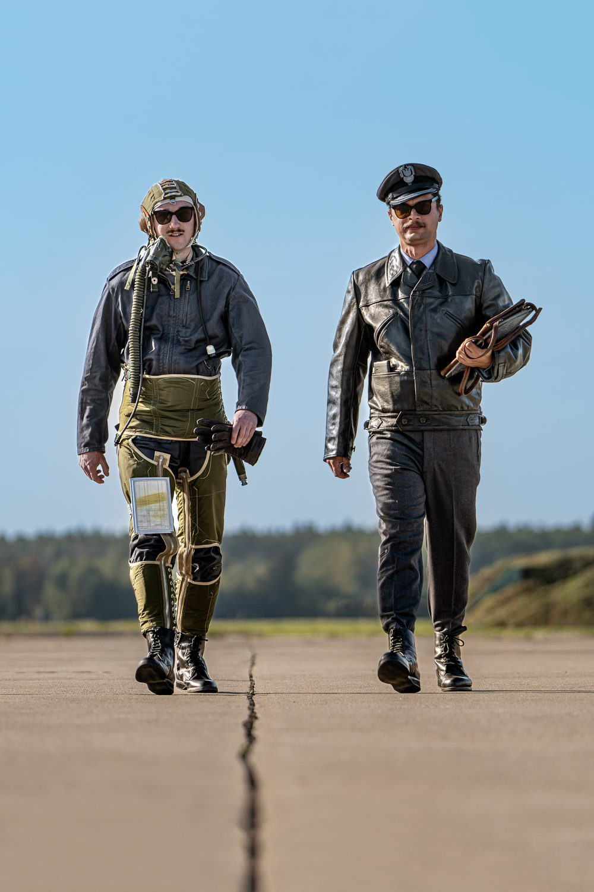
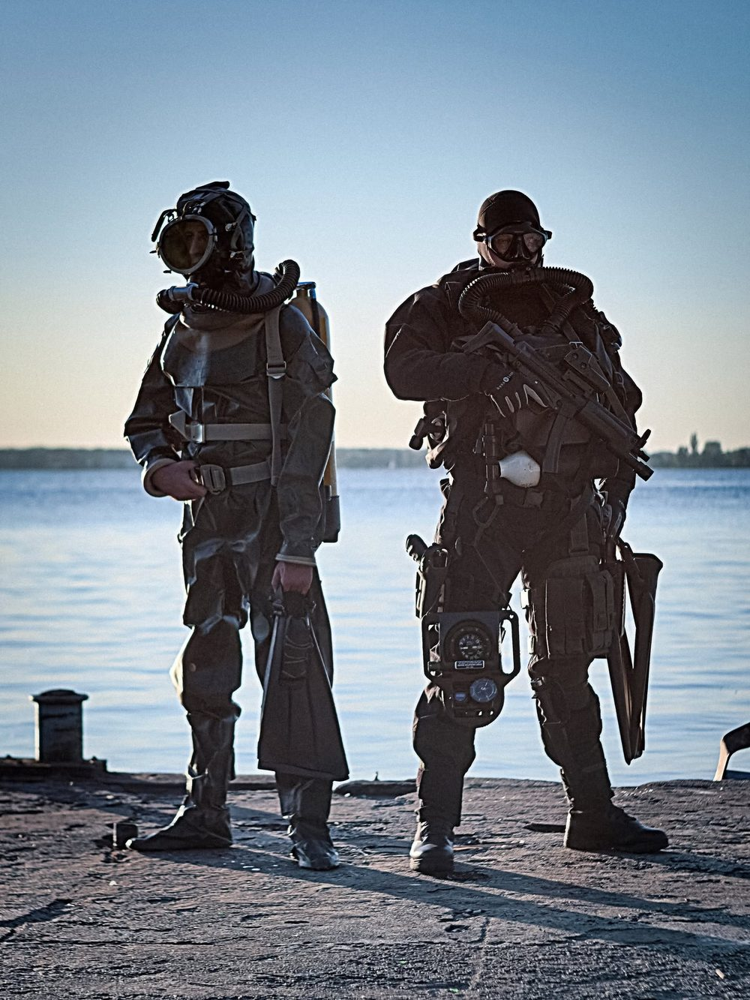
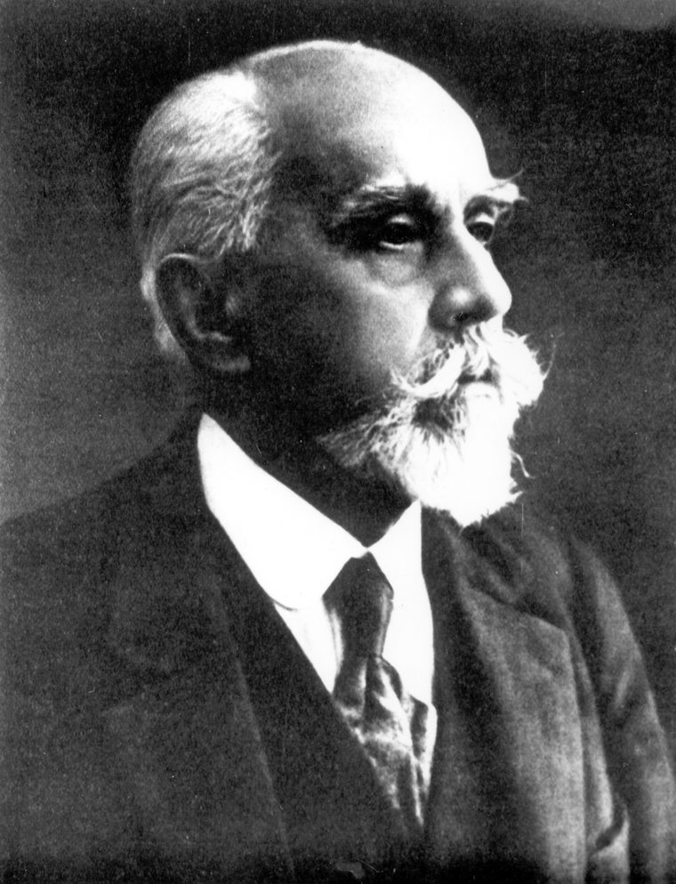

Fundacja im. Stefana DrzewieckiegoGłębiny, przestworza, kosmos
Popularyzujemy historyczny dorobek polskiej techniki podwodnej, lotniczej i kosmicznej — ubiory specjalne i urządzenia, dzięki którym człowiek przetrwał tam, gdzie natura go nie przewidziała.
Ubiory specjalne i wyposażenie
Fundacja im. Stefana Drzewieckiego to inicjatywa mająca na celu popularyzację i zwiększanie świadomości społecznej w zakresie historycznego dorobku polskiej techniki podwodnej, lotniczej oraz kosmicznej. Głównym obszarem zainteresowań fundacji są ubiory specjalne oraz urządzenia zapewniające przetrwanie człowieka w wymienionych wyżej środowiskach.
Fundacja historyczna im. Stefana Drzewieckiego to przedsięwzięcie umożliwiające w sposób formalny realizować działalność informacyjną oraz edukacyjną w oparciu o zainteresowania i pasję założycieli — Rafała Ducha oraz Łukasza Jaczuna.
Poprzez naszą aktywność wydawniczą, wystawienniczą chcielibyśmy uświadomić odbiorców o wyzwaniach stojących przed odkrywcami głębin, przestworzy i kosmosu oraz upamiętnić wysiłki konstruktorów i naukowców, stale przesuwających granice naszych osiągnięć technicznych.

Głębiny i niebo w jednej historii
W kontekście polskiej techniki, na szczególne zwrócenie uwagi zasługuje ścisła współpraca ośrodków badawczych zajmujących się zagadnieniami lotniczo-kosmicznymi oraz techniką podwodną.
Stąd też pomysł na przedstawienie tych tematów razem i wybór patrona naszej fundacji — badacza, wynalazcy w tych trzech dziedzinach.
Mamy nadzieję, że nasze działania zainspirują kolejne pokolenia do dalszego rozwijania cywilizacji technicznej, umożliwiającej kontynuację największej przygody ludzkości — odkrywania nowych światów.
Rafał Duch · Łukasz Jaczun

Stefan Drzewiecki
Patron fundacji to działacz towarzystw naukowych Francji, Rosji i Polski, należący do grona najwybitniejszych inżynierów polskich XIX wieku, pionier żeglugi podwodnej, techniki lotniczej. W historii zapisał się jako wynalazca łączący rozważania teoretyczne z eksperymentem.
Do jego bogatego dorobku zalicza się m.in. skonstruowanie pierwszych okrętów podwodnych o napędzie strugowodnym oraz o zasilaniu elektrycznym z akumulatorów; samolotu samostatecznego, opracowanie ogólnej teorii śruby okrętowej oraz śmigła lotniczego — w tym uzyskanie patentów na śmigła o łopatach nastawnych i samonastawnych.
W wolnej Polsce należał do grupy założycielskiej Warszawskiej Akademii Nauk Technicznych. W 1928 roku za uchwałą Ligi Obrony Powietrznej i Przeciwgazowej Państwa otrzymał tytuł jej honorowego członka.
Uważający się za Polaka i zawsze manifestujący swą polskość Stefan Drzewiecki zapisał Polsce w spadku cały swój dorobek naukowy. Niestety, zbiory pozostawione przez niego zostały najprawdopodobniej zniszczone w wyniku działań wojennych kampanii wrześniowej.

Zejdź z nami głębiej
Fundacja Historii Podboju Głębin, Przestworzy i Kosmosu im. Stefana Drzewieckiego
Prezes FundacjiRafał Duch
+48 517 019 609
duch.rafal@fundacjadrzewiecki.pl
KRS 0001152807REGON 54078315900000NIP 6040256714